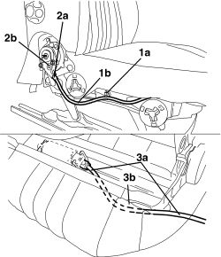

7045J55 FLEXIBLE SHAFT FROM MOTOR TO REDUCTION MECHANISM FOR FRONT SEAT BACKREST TILTING (ONE), LEFT OR RIGHT - R.R.
- Path
- Procedures > 70 FITTINGS > 7045 FRONT SEATS > 7045J FRONT SEAT ELECTRIC MOVEMENTS > 7045J55 FLEXIBLE SHAFT FROM MOTOR TO REDUCTION MECHANISM FOR FRONT SEAT BACKREST TILTING (ONE), LEFT OR RIGHT - R.R.
- Kind
- repair procedure (removal / refitting; the operation number is the code)
- Applies to
- all engines; all production periods
- Interactive page
- https://sloeber94.github.io/elrnDB-aBrrSpdr/en/#/946004172
Applies to: all engines; all production periods
 Removing
Removing
 Refitting
RefittingOp. 7045A10 FRONT SEAT (ONE), LEFT OR RIGHT - R.R.
Op. 7045A56 DRIVER'S SEAT HEIGHT ADJUSTMENT DEVICE CONTROL LEVER - R.R
Op. 7045A33 CONTROL LEVER FOR DEVICE TO ADJUST FRONT SEAT SWINGING - RR
Op. 7045A43 FRONT SEAT EXTERIOR GUARD (ONE), LEFT OR RIGHT - R.R
Op. 7045J34 FRONT SEAT BACKREST ANGLE MOTOR, LEFT OR RIGHT - R.R. FOLLOWING ELECTRICAL WIRING CHECK
1. Cut the retaining band (1a) for the flexible shaft (1b).
2. Disconnect the end (2a) of the flexible shaft (2b) from the reduction mechanism (2c) (press fit).
3. Remove the flexible shaft (3a) releasing it through the passage (3b) between the cushion structure and the cover.

Applies to: all engines; all production periods
Refitting
Removing- Check that the flexible shaft is not damaged.
- Position the flexible shaft attaching it via the passage between the cushion structure and cover.
- Connect the end of the flexible shaft to the reduction mechanism (press fit).
- Fit the flexible shaft retaining band.
Op. 7045J34 FRONT SEAT BACKREST ANGLE MOTOR, LEFT OR RIGHT - R.R. FOLLOWING ELECTRICAL WIRING CHECK
Op. 7045A43 FRONT SEAT EXTERIOR GUARD (ONE), LEFT OR RIGHT - R.R
Op. 7045A33 CONTROL LEVER FOR DEVICE TO ADJUST FRONT SEAT SWINGING - RR
Op. 7045A56 DRIVER'S SEAT HEIGHT ADJUSTMENT DEVICE CONTROL LEVER - R.R
Op. 7045A10 FRONT SEAT (ONE), LEFT OR RIGHT - R.R.
- Check that the backrest rotates correctly.
Topics linked from this page (5)
- 7045A10 FRONT SEAT (ONE), LEFT OR RIGHT - R.R.
- 7045A33 CONTROL LEVER FOR DEVICE TO ADJUST FRONT SEAT SWINGING - RR
- 7045A43 FRONT SEAT EXTERIOR GUARD (ONE), LEFT OR RIGHT - R.R
- 7045A56 DRIVER'S SEAT HEIGHT ADJUSTMENT DEVICE CONTROL LEVER - R.R
- 7045J34 FRONT SEAT BACKREST ANGLE MOTOR, LEFT OR RIGHT - R.R. FOLLOWING ELECTRICAL WIRING CHECK